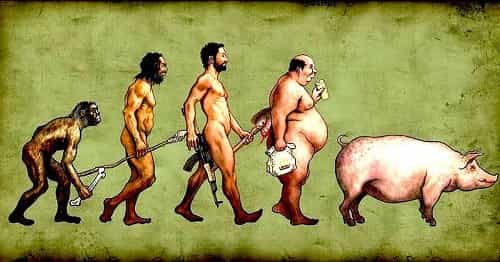
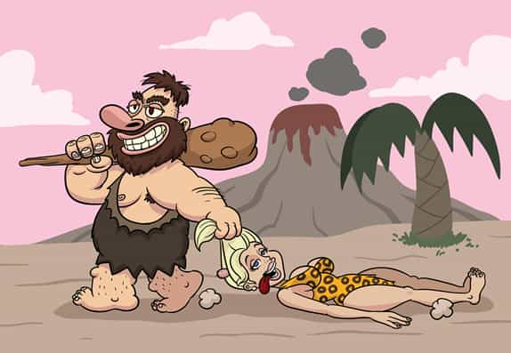

< < < Back
How Leftist Ideology Might Have Destroyed The Neanderthals – Return Of Kings
Much about the Neanderthals is shrouded in the mists of time, but archaeology provides some clues. Their disappearance is one of the mysteries of early mankind. Several theories have been proposed. I’ll put forth another; not entirely seriously, but to illustrate some important points.
It’s unlikely that ideology predated the dawn of civilization, but unconsciously following a few leftist principles doomed the Neanderthals. (When cultural Marxism is running the show, the things that once were thoughtless mistakes are actively promoted!) Thus, their demise is uncannily similar to some of today’s trends. The fate of the Neanderthals is a prime example of why packing greatly dissimilar societies into the same territory is a recipe for destruction.
What were Neanderthals like?

Be careful, you toward the left: not all change leads to progress!
The stereotype is that Neanderthals were brutish knuckleheads, but that might be wrong. They had a somewhat larger average brain size than the Cro-Magnons, their later rivals. (Interestingly, the Cro-Magnons had larger brains than modern people do, something easier to believe with each passing year. Madison Grant and Lothrop Stoddard tried to warn us…) So they weren’t complete morons. Survival in a very harsh climate—Europe and Central Asia during the Ice Age—meant that Neanderthals (and their little-known Denisovan cousins to the east) had the know-how to prepare for the brutal winters. They certainly didn’t have a nanny-state government to bail them out if they couldn’t plan ahead.
Neanderthal burial customs show that they cared about their departed, and we might deduce that they believed in an afterlife. They used tools. They made the first known musical instrument, a bone flute. The first realistic sculptures featured Neanderthal heads. They made cave paintings too. Although the Cro-Magnons were better at it, Neanderthals still were more talented than many artists today. They were physiologically capable of speech, so they likely had languages. All told, then, they did have culture, though what form it took is pretty speculative. In any event, there’s no clear evidence they were any more savage than other Paleolithic population groups.
They were stocky, with large brows, eyes, and noses, and small chins. Other than that, they were very muscular. I’m a bit of a gym rat, but even Neanderthal chicks were considerably tougher than I am. The trade-off was that they had less dexterity than Cro-Magnons, as we can see by comparing their spearheads.
As for the Cro-Magnons, they evolved in East Africa perhaps as early as 200,000 years ago. They were likely bronze-complexioned, before spreading across the globe and adapting to local conditions, eventually becoming the races of today. They had pointy chins and somewhat square eye sockets, but otherwise looked a lot like we do now. What happened when these two peoples met?
Open borders immigration
The first contact was likely in the Levant. I can imagine how the conversation between two Neanderthals might have gone:
“Hey, Og, there are some new people coming in. They’re tall and skinny, their heads look a little weird, and they talk funny. Who are they?”
“They must be refugees. We should welcome them.”
“Well, I don’t want them taking our land.”
“I’m telling you, one of these days someone around here will write a book that says ‘Therefore love the stranger, for you were strangers in the land of Egypt.'”
“I’m just not sure about all this. How do we know they won’t take our hospitality as a sign that they can play us for chumps? What’s their agenda, anyway? Will they fit in and respect our values? How do we know that they’re not going to take over one of these days? Why can’t these tired, poor, huddled masses yearn to breathe free somewhere else? How do we benefit from letting in this wretched refuse from their teeming shore?”
“You’re such a reactionary, Grunk. This is the Fertile Crescent, after all. Resources are plentiful here, and I see that there are only a few of these immigrants right now. All they want is a better place to live. Surely they’ll assimilate and learn our ways, and we’ll all get along together if only we set aside our prejudices and open our hearts. Let’s stop being xenophobic and give diversity a chance.”
“Okay, Og, you’ve convinced me. We outnumber them now, we’re stronger, and we’re in charge, so we’ll always be in control of the situation, right? Maybe they can pick our vegetables for us or something. After all, what’s the worst thing that possibly could happen?“
Later, the Cro-Magnons had overrun much of the Middle East by about 36,500 BC. By 28,000 BC, they had taken over almost all territories that Neanderthals used to inhabit nearly exclusively. Mass immigration—then a careless lack of vigilance—is something aggressively promoted today.
This certainly led to resource competition. Due to the greater musculature, Neanderthals required about twice the caloric intake as modern people (including the Cro-Magnons, who weren’t too different from us anatomically). It’s basically the same reason why you can’t graze cattle and sheep in the same pasture; the sheep chew the grass down to the ground before the cattle can get their fill.
The Neanderthals were very sparsely populated and practiced big-game hunting. That worked out fine, until people who could get by with greater population density came in and started eating all their food. Studies on the remains of the late Neanderthals suggest that malnutrition was fairly common.
Were they resentful that their hunting grounds were being picked clean by the newcomers? Perhaps that was like many conservatives today grumbling about fresh-off-the-boat immigrants milking the welfare system while staying home and making babies. The taxpayers (52% of the American population, as Mitt Romney indelicately observed) have to work to support everyone on public assistance, sometimes limiting their own family size because they’re being taxed to death. We want at least a decent, middle-class existence (high resources) for our kids; those living on the government tit (low resources) have no such requirements. And on the subject of differential fertility rates…
Depopulation
Andrea Dworkin, grand high poobah of the Junior Anti-Sex League
The new immigrants, the Cro-Magnons, had a slightly higher fertility rate than Neanderthals did. The population change wasn’t much per year, but over thousands of years it was very significant. Even so, the Neanderthals didn’t have much to complain about, since the populations now invited to flood the Western world have a much higher fertility rate than the host populations.
Why was the Neanderthal fertility rate lower? The real reason probably has to do with them being a little bit more K-selected. Still, I can’t help but wonder if leftist ideology might have been involved. After all, much of their platform serves the depopulation agenda, for reasons which are pretty obvious. They aggressively promote anti-natal policies: abortion, homosexuality, the transsexual fad, the “childfree” lifestyle, even the Voluntary Human Extinction Movement, etc. Leftists would dwindle away, if they didn’t control the media and education systems to indoctrinate the public.
Were there any of the likes of Bella Abzug, Valerie Solanas, or Andrea Dworkin during the Paleolithic Era? We don’t have any direct evidence of this, of course. Still, quite a few feminists bear more than a passing resemblance to burly cavewomen, so they might be throwbacks. And on the subject of looks…
Self-defeating diversity

“Hey, baby, what’s your sign?” “Buy me a drink and I’ll tell you.” “Shit Test, huh? I bet you’re a Capricorn, Taurus, Aries… well, anything I guess.”
When the exotic newcomers entered Neanderthal territory, they did what differing populations packed into close proximity eventually get around to doing. Those Neanderthals who hadn’t been overcrowded to death ended up interbreeding themselves out of existence. The process began pretty quickly; hybrid skulls have been found, such as in the Levant.
Interestingly, there has never been any Neanderthal mitochondrial DNA found in any modern humans. This means that there are no female lineages. There are a few hypotheses for this. Jean Auel put forth a couple of scenarios in her Earth’s Children novels, and that’s all I care to say about it. Another explanation is that boys born from Cro-Magnon male to Neanderthal female crossings could have been infertile. Likewise, there may be something to another hypothesis as to why there are no Neanderthal Y-chromosomes today, but I won’t bore you to tears.
I propose another reason why nobody has matrilineal descent from a Neanderthal woman. We at Return Of Kings are aware of the following indelicate facts:
- Chicks dig big, tough guys with muscles.
- Given the choice, guys prefer chicks who are least likely to push them around.
So, Neanderthal men were attracted to the slender Cro-Magnon ladies who surely respected them, and let neither cultural differences nor exotic looks stand in the way of getting laid. Meanwhile, Cro-Magnon guys liked their women slender too. They weren’t so enthusiastic about burly Neanderthal babes who would have written them off as betas and friend-zoned them anyway.
This undoubtedly drove the Neanderthal fertility rate further down. Because they believed that race isn’t important (“only a social construct“, as it goes now), they nailed their own coffin shut. They scored some Cro-Magnon punani, but their descendants don’t look very much like them.
As a result, most people have about 1-4% Neanderthal DNA; the numbers being slightly on the higher side for East Asians. That’s about the equivalent of having one Neanderthal great-great-great grandfather, and the rest of your ancestry is Cro-Magnon. (If indeed fertile offspring was less likely, these matches may have been more common than we’d expect.) Pure Africans are the exception, since Neanderthals never went there. As for the rest of us, basically we’re the Neanderthals now, but not very much.
So that’s the story of the two ancient races which—after tens of thousands more years of evolution—developed into the modern races of mankind across the globe. Unfortunately for the Neanderthals, their unique looks and culture effectively became extinct a long time ago. Basically, these hardy Ice Age apex predators were surrounded by a faster growing population which overwhelmed them as time went by, and got assimilated to death.
Today’s Social Justice Warriors would be delighted to do that to all of humanity today, destroying diversity in the name of diversity. If the globalist elites calling the shots get their way, not even the pure Africans will escape the pan-gaeic biological stir-fry, even though they’re not the primary target yet.
Global warming
Could this be the true cause of global warming today?
Here’s one item where liberalism actually was right. Climate change removed the habitat where Neanderthals had a natural advantage, as they thrived in cold climates. Unlike today’s hot controversy, global warming certainly happened; the Ice Age ended. Rising oceans ate up a tremendous amount of coastline. For example, the English Channel used to be only a river. What is now the North Sea was above ground. However, even if we could send Al Gore back to the Ice Age to warn everybody, it wouldn’t have helped. Climate change happened because of natural forces, not people driving too many cars.
What could be done about global warming today? More nuclear power would drive carbon emissions way down. At the very least, it would conserve valuable resources. Next-generation designs (pebble bed reactors, thorium reactors, etc.) could be quite safe. However, nuclear power makes liberals quake with fear. Note also that the Obama administration ordered the Yucca Mountain nuclear waste disposal facility closed after billions were spent to get it ready, despite it being one of the safest places on earth to store spent nuclear fuel. Liberals refuse to consider uncomfortable subjects; Pizzagate being the latest example of this.
If anthropogenic climate change is true—I’ll consider it to be one possible factor of many—then refusal to allow an expedient solution might submerge much more coastline. Many liberals believe we should severely curtail using modern technology. So some leftists (ecofeminism, Ted Kaczynski) think we were better off before industrialization—and a few (anarcho-primitivism) actually propose returning to the Stone Age—but I don’t see many giving up their iPads, cell phones, and other gadgets.
Even when leftists make correct observations (at least arguably so), they can’t find practical solutions. Thus, they’re pretty much useless at public policy. Even worse is when they make short-sighted decisions to assuage their bleeding hearts. Often, this involves social engineering that eventually will destroy their own way of life if they get their way. Although they might long for collective suicide, they have no right to send their people the way of the Neanderthals.
Read more: The Incomplete And Flawed History Of The Human Species